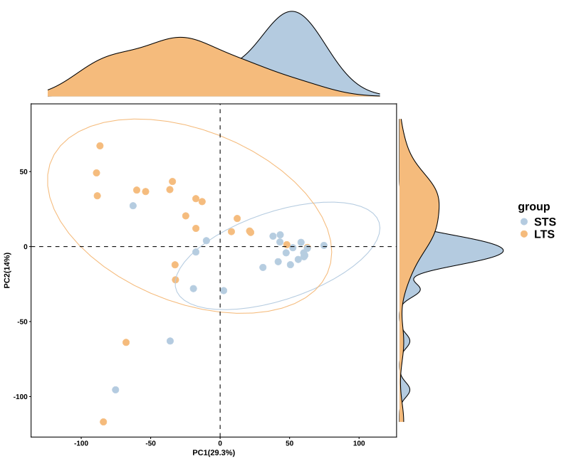
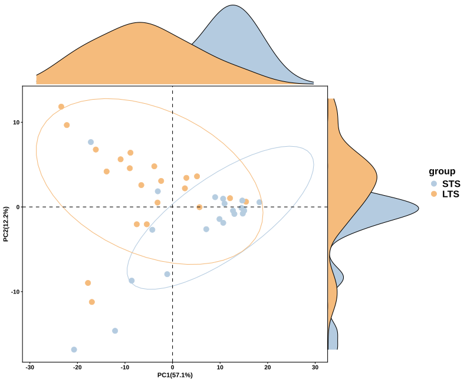
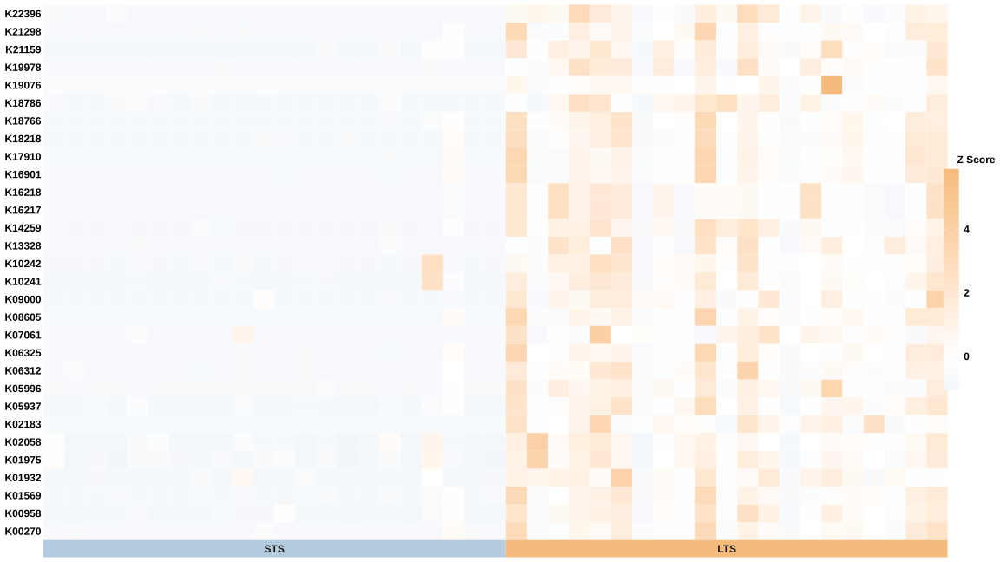
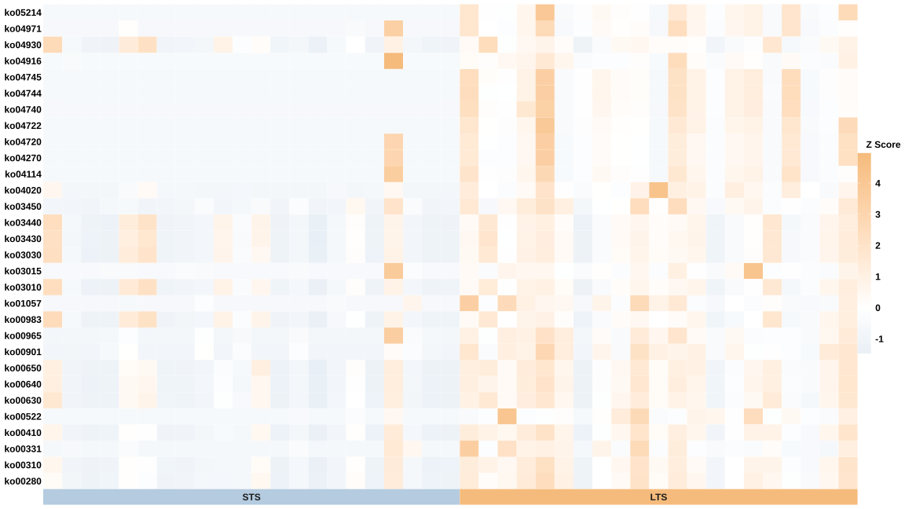
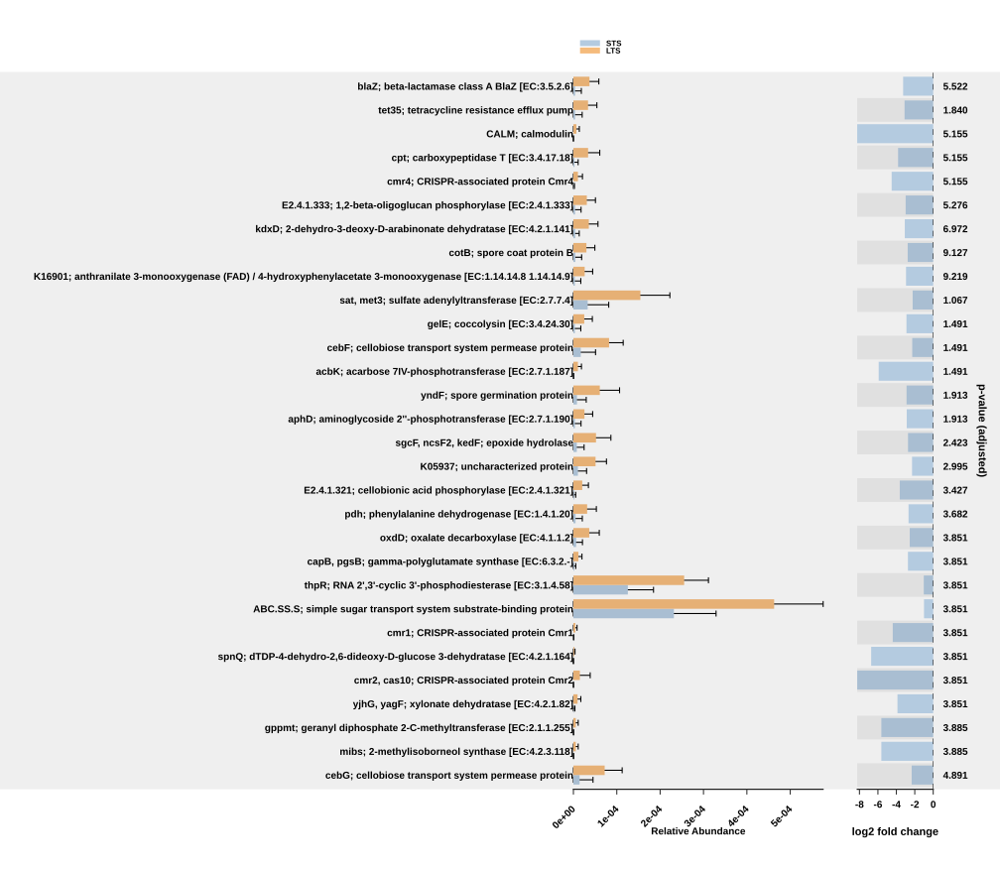
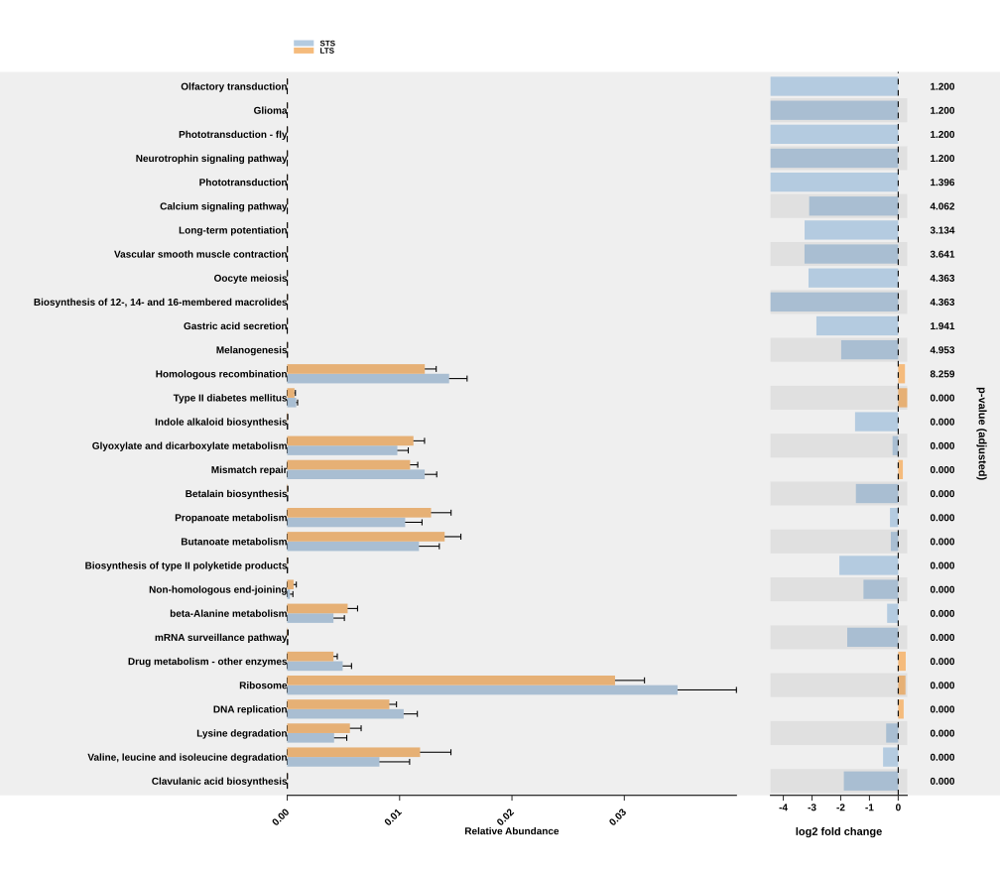

Demonstration Study (Standard)
demonstration-standard.RmdThis study follows the STS/LTS comparison at the community level. We first look across whole functional profiles, then inspect selected features and their group summaries. Unlike the stratified demonstration, these tables pool the ASV contributions within each sample.
Study data
Two functional resolutions are shown. KO profiles retain individual
KEGG Orthology identifiers such as K18766. KEGG pathway
profiles combine mapped member KOs into pathways such as
ko04740. These are predicted functional profiles from
PICRUSt2, rather than direct measurements of functional genes or
metabolic activity.
The supplied study exports contain six figures and two lists of 30 features used in the significant-feature heatmaps. The plots compare short-term survivors (STS, blue) with long-term survivors (LTS, orange). The figure exports do not include the underlying abundance tables, sample metadata or full fitted results. Use the matching study inputs for the code below; the bundled plotting examples provide a separate runnable practice dataset.
| Input | What it supplies |
|---|---|
| Unstratified KO table | KO-by-sample predicted abundances from standard PICRUSt2 output. |
| Sample metadata | Sample identifiers and the STS/LTS group assignment. |
| KO-to-KEGG mapping | The membership table used to aggregate KOs to pathways. Retain the same mapping throughout the analysis. |
| Annotated differential results | One fitted method and STS/LTS contrast at each functional resolution. |
| Exported feature lists | The 30 KO IDs and 30 pathway IDs selected for the displayed heatmaps. |
1. Prepare the community profiles
library(MicroFun)
ko_input <- read.delim(
"my_study/KO_metagenome_out/pred_metagenome_unstrat.tsv.gz",
check.names = FALSE
)
meta <- read.delim("my_study/sample_metadata.tsv", check.names = FALSE)
reference <- "STS"
target <- "LTS"
meta <- meta[meta$group %in% c(reference, target), , drop = FALSE]
meta$group <- factor(meta$group, levels = c(reference, target))
stopifnot(!anyDuplicated(meta$sample_name))
stopifnot(all(meta$sample_name %in% names(ko_input)[-1]))
ko_input <- ko_input[, c(names(ko_input)[1], meta$sample_name), drop = FALSE]
ko_abundance <- as.matrix(ko_input[, -1, drop = FALSE])
rownames(ko_abundance) <- ko_input[[1]]
stopifnot(is.numeric(ko_abundance), all(is.finite(ko_abundance)))
# Reuse the mapping used by the study. The default is the bundled map.
kegg_abundance <- ko2kegg_abundance(data = ko_input)
# For a saved custom membership file, use this instead.
# kegg_abundance <- ko2kegg_abundance(
# data = ko_input, kegg_map = "my_study/KO_to_KEGG_mapping.tsv"
# )
out <- "MicroFun_standard_study"
dir.create(out, recursive = TRUE, showWarnings = FALSE)Check the group assignments and sample identifiers before comparing panels. KO-to-pathway aggregation uses a local membership mapping; it does not update that mapping from KEGG. See mapping and online annotation for the steps that require a network connection.
2. Keep the fitted contrast and feature selection together
Use the KO and pathway results fitted to the same cohort. The Standard
workflow shows how to fit with pathway_daa() and
annotate with pathway_annotation(). The supplied figures
alone do not establish the original fitting method, so preserve that
information from the study’s saved result tables when reproducing
them.
# Load the study's saved annotated results rather than substitute teaching results.
daa_ko <- readRDS("my_study/KO_annotated_results.rds")
daa_kegg <- readRDS("my_study/KEGG_annotated_results.rds")
required <- c("feature", "method", "group1", "group2", "p_adjust")
stopifnot(all(required %in% names(daa_ko)))
stopifnot(all(required %in% names(daa_kegg)))
stopifnot(length(unique(daa_ko$method)) == 1L)
stopifnot(length(unique(daa_kegg$method)) == 1L)
unique(daa_ko[c("method", "group1", "group2")])
unique(daa_kegg[c("method", "group1", "group2")])Download the KO
feature list and KEGG feature
list into a local folder named study_features. These
preserve the displayed selection without trying to reconstruct it from a
rendered figure.
ko_features <- read.csv("study_features/KO_features.csv")$feature
kegg_features <- read.csv("study_features/KEGG_features.csv")$feature
stopifnot(all(ko_features %in% rownames(ko_abundance)))
stopifnot(all(kegg_features %in% rownames(kegg_abundance)))
sample_groups <- factor(
meta$group[match(colnames(ko_abundance), meta$sample_name)],
levels = c(reference, target)
)3. Compare overall functional profiles
PCA at KO level
ko_variance <- apply(ko_abundance, 1, stats::var)
p_ko_pca <- pathway_pca(
ko_abundance[is.finite(ko_variance) & ko_variance > 0, , drop = FALSE],
meta, group = "group"
)
ggplot2::ggsave(file.path(out, "KO_pca.svg"), p_ko_pca,
width = 11, height = 9)
The first two components explain 29.3% and 14.0% of the variation, together accounting for 43.3%. Many LTS samples appear toward lower PC1 and higher PC2 values, while many STS samples occupy the opposite part of the projection. The groups overlap and both include dispersed observations. This view summarizes variation across KO profiles; it is not itself a test of a group difference.
PCA at KEGG pathway level
kegg_variance <- apply(kegg_abundance, 1, stats::var)
p_kegg_pca <- pathway_pca(
kegg_abundance[is.finite(kegg_variance) & kegg_variance > 0, , drop = FALSE],
meta, group = "group"
)
ggplot2::ggsave(file.path(out, "KEGG_pca.svg"), p_kegg_pca,
width = 11, height = 9)
At pathway resolution, PC1 explains 57.1% and PC2 explains 12.2%, for a total of 69.3%. The broad group pattern remains visible, with overlap and several samples away from the main concentrations. The larger percentage on PC1 describes a different feature space after aggregation; it should not be read as evidence that this analysis is more statistically significant than the KO analysis.
4. Inspect selected features across samples
Heatmap of selected KOs
p_ko_heatmap <- pathway_heatmap(
ko_abundance[ko_features, , drop = FALSE], meta,
group = "group", font_size = 8
)
ggplot2::ggsave(file.path(out, "KO_heatmap.svg"), p_ko_heatmap,
width = 11, height = 10)
Each row is a KO and each column a sample, arranged by STS/LTS group. Look for shifts shared by several samples as well as isolated high values. The row-wise z-score scale describes variation within each KO; a warm row is not necessarily more abundant than another row. Selection from differential results also means this panel is a view of selected features rather than an independent confirmation of group separation.
Heatmap of selected KEGG pathways
p_kegg_heatmap <- pathway_heatmap(
kegg_abundance[kegg_features, , drop = FALSE], meta,
group = "group", font_size = 8
)
ggplot2::ggsave(file.path(out, "KEGG_heatmap.svg"), p_kegg_heatmap,
width = 11, height = 10)
The pathway view gives a broader functional summary of the selected differences. Compare samples within each row and inspect whether the direction is consistent within a group. Related patterns across several pathways may partly reflect shared member KOs; the rows do not represent mutually exclusive portions of the community’s predicted functional abundance.
5. Examine group abundance summaries
Error-bar plot at KO level
p_ko_errorbar <- pathway_errorbar(
abundance = ko_abundance, daa_results_df = daa_ko,
Group = sample_groups, select = ko_features,
p_values_threshold = 0.05, order = "p_values",
ko_to_kegg = FALSE, x_lab = "description", p_value_bar = TRUE
)
ggplot2::ggsave(file.path(out, "KO_errorbar.svg"), p_ko_errorbar,
width = 16, height = 14)
The supplied KO export shows larger mean relative abundances in LTS for many of these features. Read the abundance panel together with the descriptive log2 ratio, whose direction follows the group order. With STS as the first factor level, a negative ratio means a larger mean in LTS. The function normalizes each sample using the full abundance table before selecting features.
The adjusted-p labels in this supplied KO export include values above 1 and await a corrected export. Use the abundance and direction panels here; those displayed labels cannot be interpreted as valid p-values.
Error-bar plot at KEGG pathway level
kegg_groups <- factor(
meta$group[match(colnames(kegg_abundance), meta$sample_name)],
levels = c(reference, target)
)
p_kegg_errorbar <- pathway_errorbar(
abundance = kegg_abundance, daa_results_df = daa_kegg,
Group = kegg_groups, select = kegg_features,
p_values_threshold = 0.05, order = "p_values",
ko_to_kegg = FALSE, x_lab = "pathway_name", p_value_bar = TRUE
)
ggplot2::ggsave(file.path(out, "KEGG_errorbar.svg"), p_kegg_errorbar,
width = 16, height = 14)
The pathway panel connects predicted abundance summaries to readable
functional labels. A larger bar indicates a larger group mean, not
necessarily the strongest modeled effect. Whiskers in this function
extend from zero to the mean plus one standard deviation; they are not
confidence intervals. Adjusted-p labels rounded to 0.000
indicate limited display precision and should not be reported as exactly
zero. Use the original result table for exact values.
Community-level differences summarize all contributors together. Continue with the Stratified study to ask which genera and functions are linked within that total.